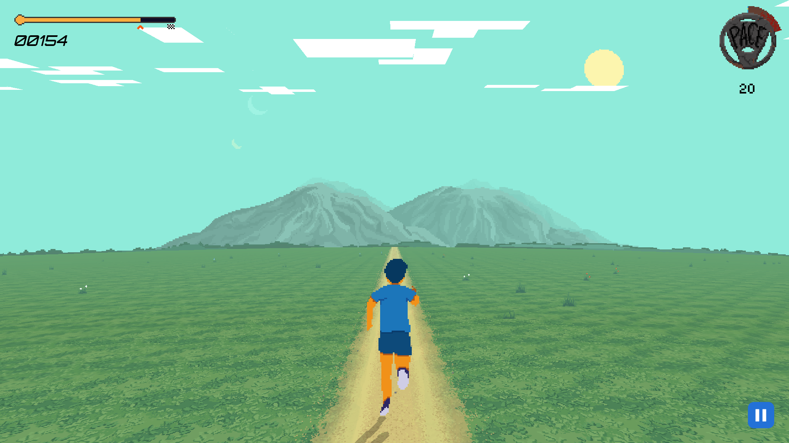

ANDROID FIREBASE WEBRTC KOTLIN
Top 10 finalist for Google Solution Challenge 2021. Game Your Fit is a workout application that's designed to motivate users to exercise more through gamification.
Users can open the website and control the player character using sensors on their phone. The user's movement will be tracked and sent as an input to the browser.
This project was a 6-month long marathon of us learning many new technologies. I was responsible for designing and coding the Android UI and backend APIs. One of the unique challenge that we faced in this project is our relatively small team size. Our big scope combined meant that every member had to wear many hats and dip their toes in different parts of the projects. Other than the Android application, I also helped other members in designing the WebRTC interface to communicate between devices.
This project was a 6-month long marathon of us learning many new technologies. I was responsible for designing and coding the Android UI and backend APIs. One of the unique challenge that we faced in this project is our relatively small team size. Our big scope combined meant that every member had to wear many hats and dip their toes in different parts of the projects. Other than the Android application, I also helped other members in designing the WebRTC interface to communicate between devices.